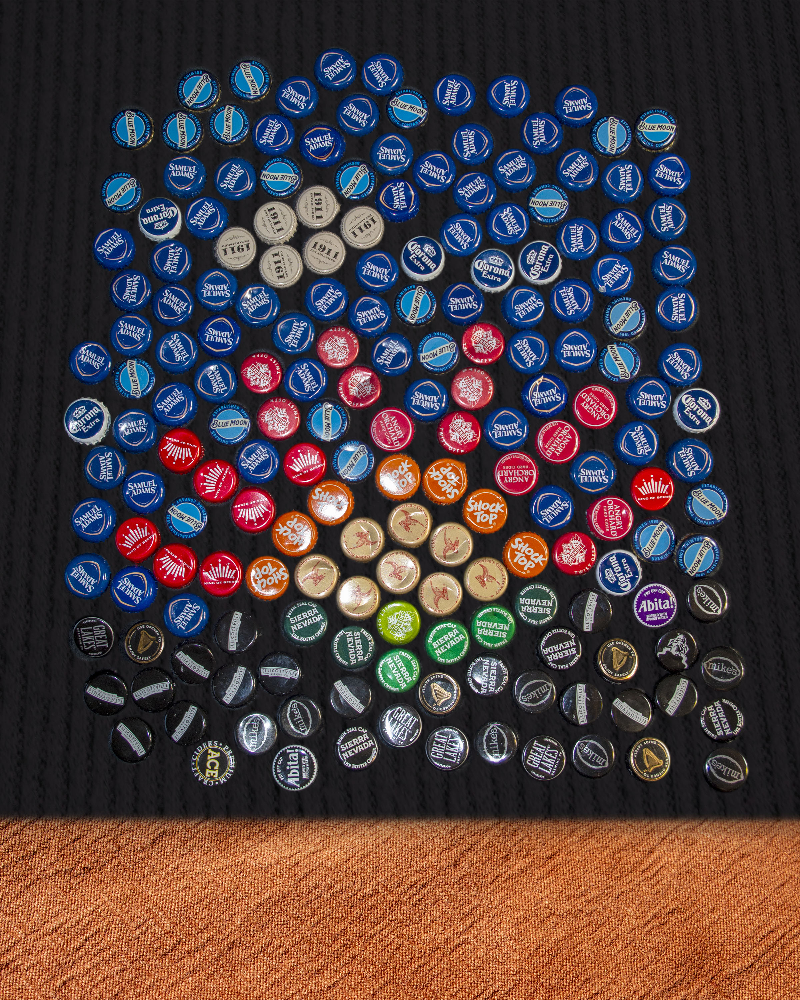

The Cap Mosaic is a massive art installation on the border between The Republic of Kitchen and The People’s Union of Living Room . It was given to Living Room by Kitchen as a peace offering, and depicts a sunrise: a symbol of the growth of a positive relationship between all peoples of Downstairs.